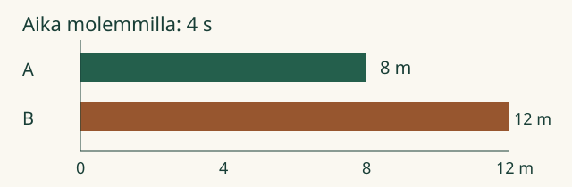

Aava ja Loikka tutkivat mittavaunuja. Kumpi etenee nopeammin? Pelkkä matka ei riitä: tarvitsemme myös ajan.
Tavoite: osaan verrata kuljettua matkaa käytettyyn aikaan.
Sama aika — vertaile matkoja
Vaunu A kulkee neljässä sekunnissa 8 metriä. Vaunu B kulkee samassa ajassa 12 metriä. B on nopeampi: se etenee enemmän samassa ajassa.

Sama matka — vertaile aikoja
A ja B kulkevat kumpikin 12 metriä. A käyttää 4 sekuntia, B käyttää 6 sekuntia. Nyt A on nopeampi. Sama matka vie siltä vähemmän aikaa.
Pysähdy miettimään
Aava näkee toisen vaunun kulkevan 20 metriä, toisen 10 metriä. Voiko hän jo tietää, kumpi on nopeampi?
Paljasta ajatus
Ei voi. Hän tarvitsee myös molempien käyttämät ajat. Pidempi matka ei yksin tarkoita suurempaa nopeutta.
Tutki liikettä itse
Valitse vertailu. Tutki matkaa ja aikaa yhdessä.
Miten mallia käytetään?
Paina Käynnistä tai etene sekunti kerrallaan. Molemmat lähtevät samalla hetkellä. Voit pysäyttää ja palata alkuun. Vaunu ja sen suoritusajan kello pysähtyvät suorituksen päätyttyä. Tauko mukana -kokeessa myös suunniteltu pysähdys kuuluu kuuteen sekuntiin.
Vuorovaikutteinen näkymä latautuu tähän. Ilman JavaScriptiä voit käyttää yllä olevia ratkaistuja esimerkkejä.
Eri matkat ja ajat
A kulkee 8 metriä 2 sekunnissa. B kulkee 12 metriä 3 sekunnissa. Molemmat etenevät keskimäärin 4 metriä sekunnissa: keskinopeus on sama, 4 m/s.
Keskinopeus = koko kuljettu matka ÷ koko kulunut aika. Sekunti ei ole matkan osa: m/s kertoo, montako metriä kuljetaan keskimäärin yhdessä sekunnissa.
Jos vaunu liikkuu osan aikaa ja pysähtyy välillä, myös pysähdysaika kuuluu koko aikaan. Keskinopeus kuvaa koko matkaa, ei vain vaunun liikkeessä käyttämää vauhtia.
Pidempi matka, silti hitaampi
A kulkee 12 metriä 3 sekunnissa: keskimäärin 4 metriä sekunnissa. B kulkee 20 metriä 10 sekunnissa: keskimäärin 2 metriä sekunnissa. B kulkee pidemmälle, mutta A on nopeampi. Alla oleva vertailu alkaa tilanteesta ”Eri matkat ja ajat — vertaa vauhteja”.
Vertaa eri matkojen vauhteja
Malli on ilman JavaScriptiä alkuperäisessä kohdassaan: avaa mallin kohta.
Kokeile toisessa tilanteessa
Pyöräilijä kulkee 600 metriä 3 minuutissa. Toinen kulkee 1 000 metriä 5 minuutissa. Molemmat kulkevat keskimäärin 200 metriä minuutissa. Suurempi matkalukema ei tee toisesta nopeampaa.
Lisätuki: tee vertailusta reilu
Piirrä kummallekin samaan asteikkoon matkapalkki. Merkitse aika erikseen. Kysy ensin: onko aika sama vai onko matka sama? Jos kumpikaan ei ole, vertaa matkaa yhtä aikayksikköä kohti.
Lisätutkimus ja opettajan vinkki
Palaa liikkeen vertailuun ja valitse Tauko mukana. A ajaa ensin 12 m kolmessa sekunnissa ja seisoo sitten kolme sekuntia. B etenee 2 m joka sekunti kuuden sekunnin ajan. Mitä huomaat hetkellä 3 s? Entä hetkellä 6 s?
Molempien keskinopeus koko kuuden sekunnin aikana on 2 m/s. A:n liikkeen aikainen vauhti on 4 m/s. Keskinopeus ei ole sama asia kuin jokaisen hetken vauhti.
Luokassa: mittaa turvallinen kävelymatka ja koko suoritukseen kuluva aika. Käytä yhteistä lähtö- ja lopetuskäytäntöä. Käsiajanotto tuo mittausepävarmuutta; ruudun tarkat malliluvut eivät tee todellisesta mittauksesta tarkkaa.
Tämä ruutukoe harjoittaa tulkintaa. Se ei osoita itsenäistä mittaamista, pysyvää muistamista tai fyysisen kokeen osaamista.
Lähtökysymys
A etenee 15 m viidessä sekunnissa ja B 12 m neljässä sekunnissa. Kumpi on nopeampi? Perustele vertaamalla matkaa yhdessä sekunnissa.
Paljasta ratkaisu
Molemmat etenevät keskimäärin 3 m/s. Keskinopeudet ovat yhtä suuret.